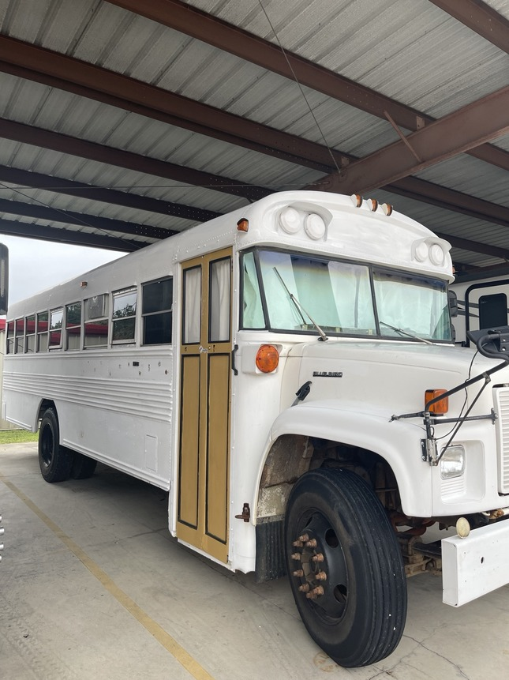
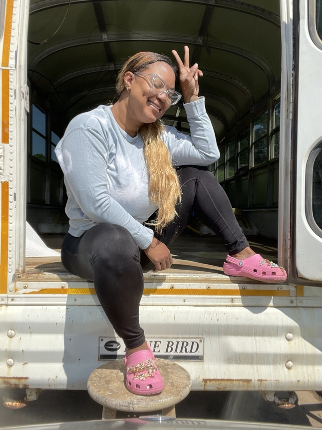
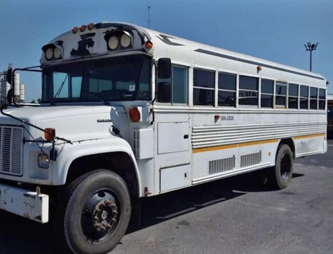
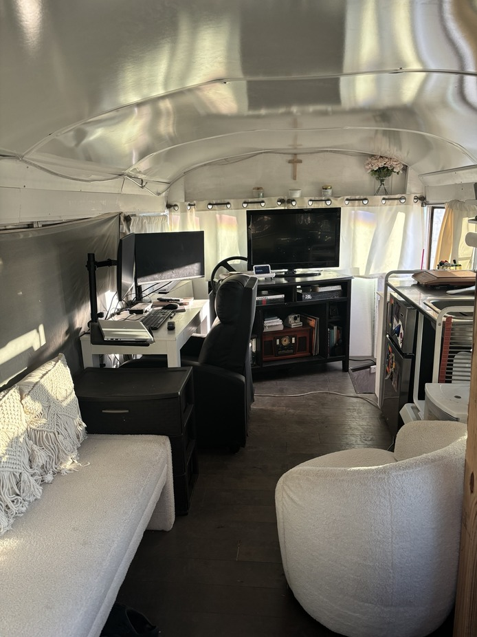
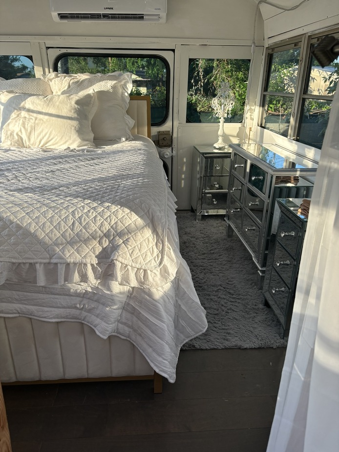

From School Bus
To Home on Wheels
Built by me · 2022–2024
I bought my school bus in 2022, inspired by the idea of traveling during the COVID era. Texas never really shut down, but the idea stayed with me, and the bus became something much bigger: my own skoolie project. I spent two years transforming it into a home on wheels and finished it in 2024. I did the work myself, with the exception of the plumbing and electrical.
For a year, I kept my skoolie in Galveston and spent many nights on the beach under the stars. Later, I bought a piece of land on the east side of Houston and parked it there until work brought me to Chicago. In 2025, I sold the bus to a young content creator. Letting it go closed one of my favorite chapters, but building it, staying in it and having that time alone was one of the best journeys I have ever given myself.
The Transformation




